Designing Better Bonds Methods for Parent-Child Relationships
A play-based piece of furniture with an accompanying instruction booklet that helps parents and children bond through building together, without screens.
- Role
- Interaction Designer
- Timeline
- December 2022 – May 2023
Overview
Background. Technology provides many benefits to traditional social interactions and growth, but it can also be a catalyst of harm in how children play and interact socially as they mature.
Project goal. Develop a solution with a focus on how design can promote the importance of play and growth within a parent-child relationship, through assembling furniture with an accompanying instructional piece that supports youth development.
At a glance
"The overuse of screens can cause children to miss out on critical social and emotional experiences that are essential to bonding with their parents and developing healthy relationships."
Common Sense Media (2022), Screen Time and Children
"The excessive use of digital devices can interfere with parent-child interactions, leading to less parent-child bonding and less healthy child development."
Lerner, C. & Barr, R. (2014), Screen Sense: Setting the Record Straight. Psychology Today
This is where I spent the least amount of time in my research. I already knew this was an issue from my own observations and reading, but I wanted to dive a little deeper into what some groups and experts were saying on the subject. The question I was primarily asking:
What ways can we engage children without technology?
Research
This is where I spent the bulk of my time researching the space. Here are some quick points to keep in mind as you go through this section:
- Unstructured play and structured play are the main types of play
- Play is key to children's learning, development, confidence and wellbeing
- Variety in play is important because it helps with all areas of children's development
- As children grow, the way they play changes
Play creates a central pathway for a child's learning and development. It gives children different sensory, physical and cognitive experiences. Those experiences build connections in the brain, which helps children develop physically, cognitively, socially and emotionally. Play can also build confidence, make children feel loved, and better develop social, communication and language skills.
Physical and digital prototyping
I began sketching concepts for a product that would facilitate parent-child bonding. I looked at furniture and pieces that are usually used in schools and daycares, and settled on something animal-based. The actual piece of furniture is merely a vessel. The piece that really needed to be nailed was the accompanying instructional material.
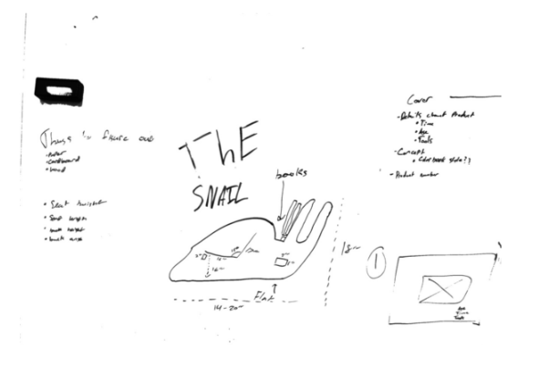
Think-aloud prototyping
Objective. To have participants construct a cardboard prototype of the concept with any accompanying instructions, then create a flow map of possible instructions with their help, based on their experience building the product.
Rationale. I primarily wanted to see how participants thought about the varying pieces and how they should go about assembling the prototype without any instruction. I also wanted to observe how two people approach building one thing together, and what sort of decisions and roles they might assume in the process.
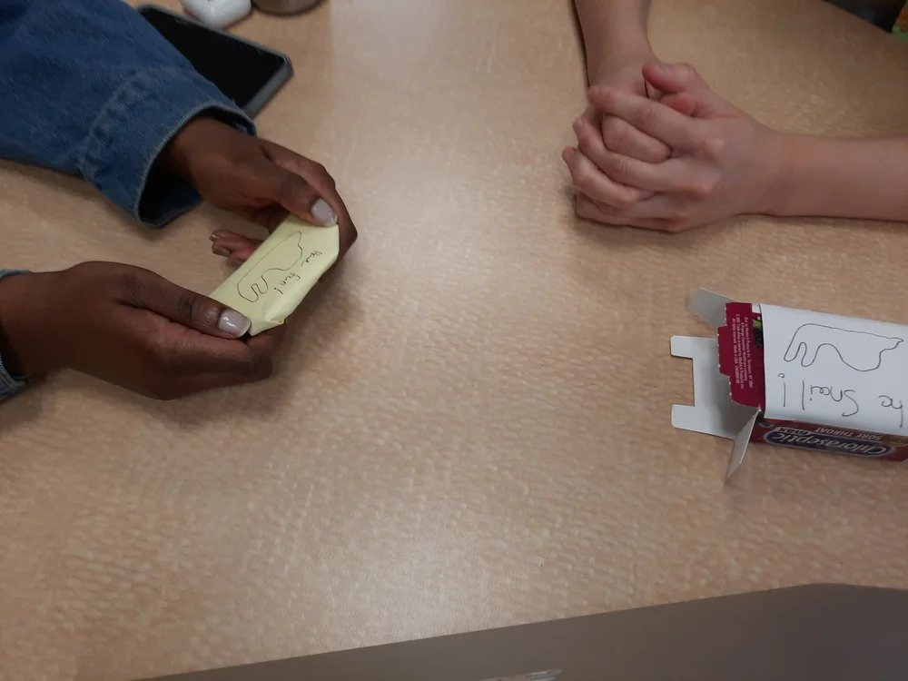
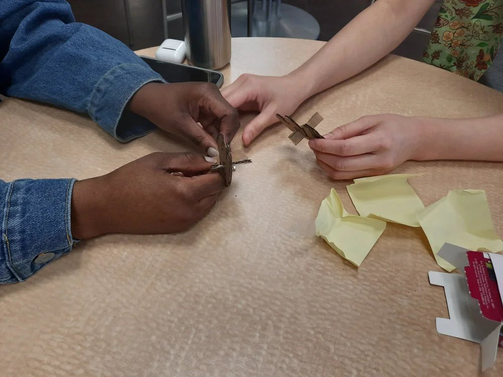
Takeaways
- Participants had some trouble identifying the various parts of the piece, so introducing the parts and what they do could be beneficial
- I better understood how differing perspectives of assembly work with the concept
- I observed how two people interact when building something together, and how to instill that better in the final instructions
Instructional flow
Following the think-aloud testing, I created an instructional flow around how the manual would go and the various stages within it, with the blue sticky notes dedicated to feedback from my earlier testing. The most important part of this flow is the yellow sticky labeled "Stage setting," which has to do with the initial design moves that get the parent and child bonding interactions started.
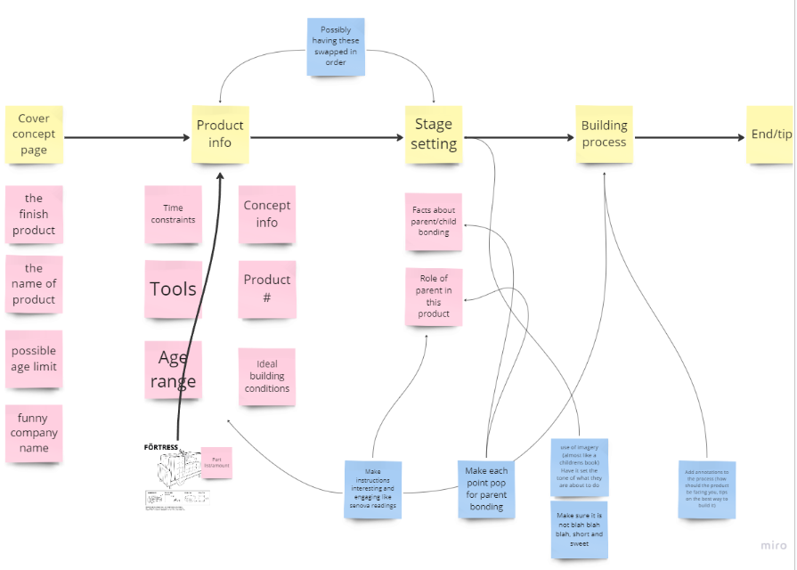
Final design
The final design is a spiral-bound instruction booklet that guides a parent and child through building the snail together. It combines product details, background on parent-child bonding, a short story, and step-by-step assembly prompts that encourage the pair to work as a team.
Booklet spreads
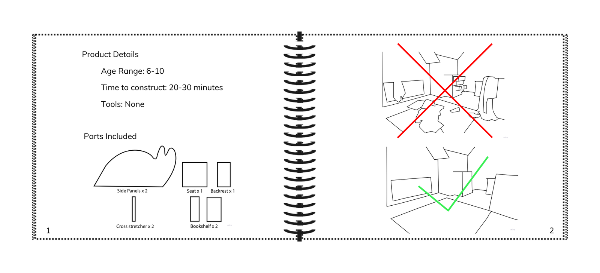
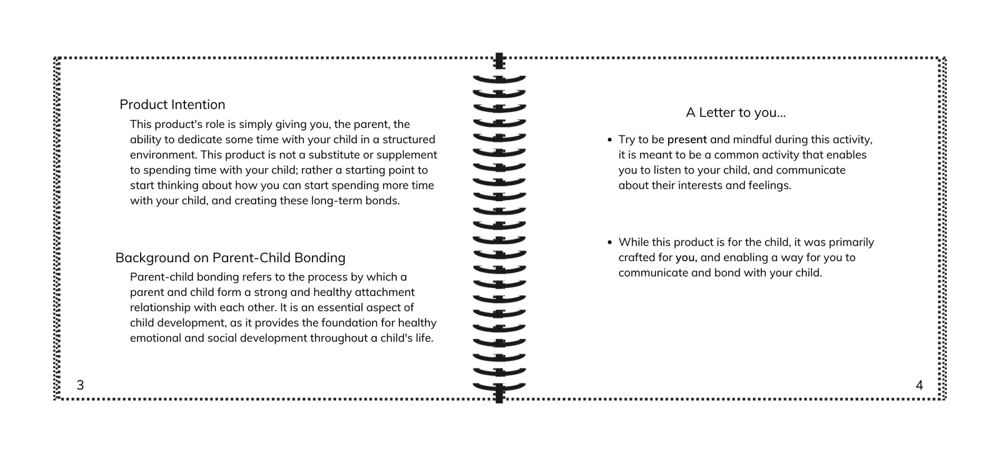
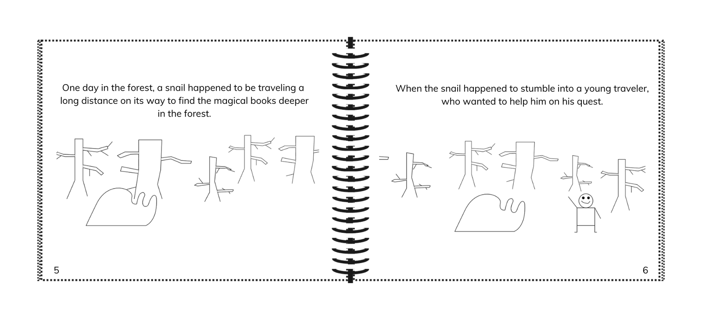
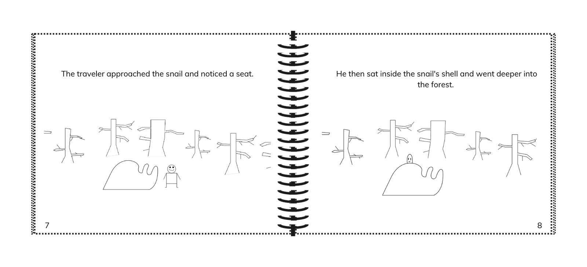
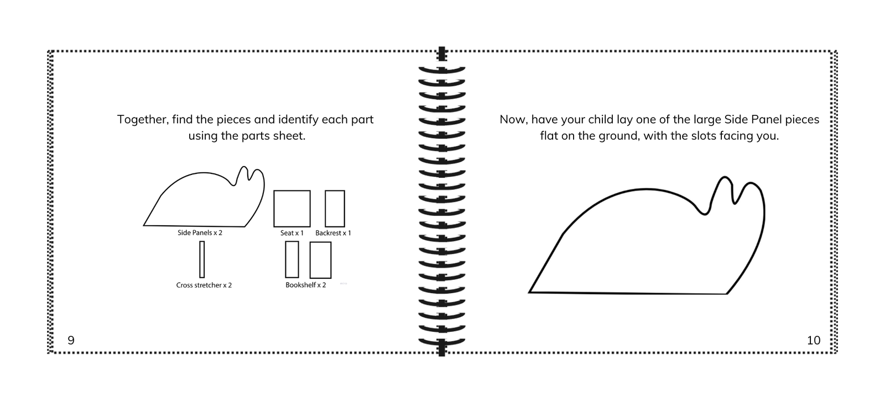
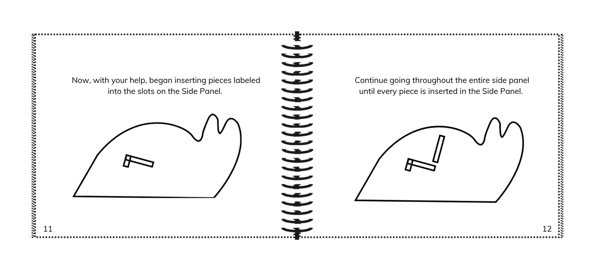
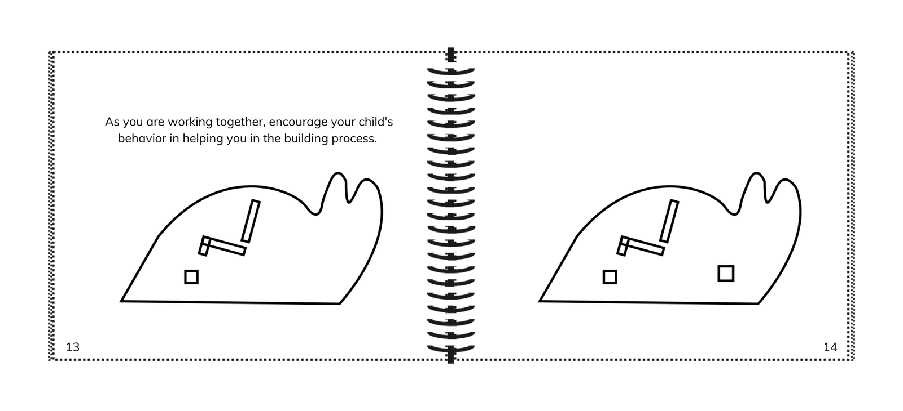
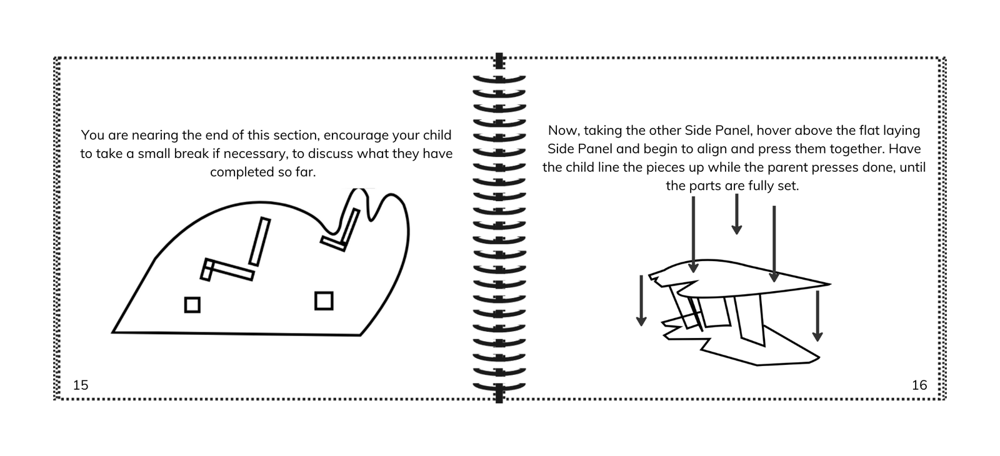
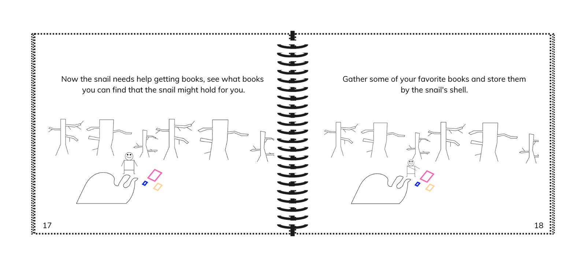
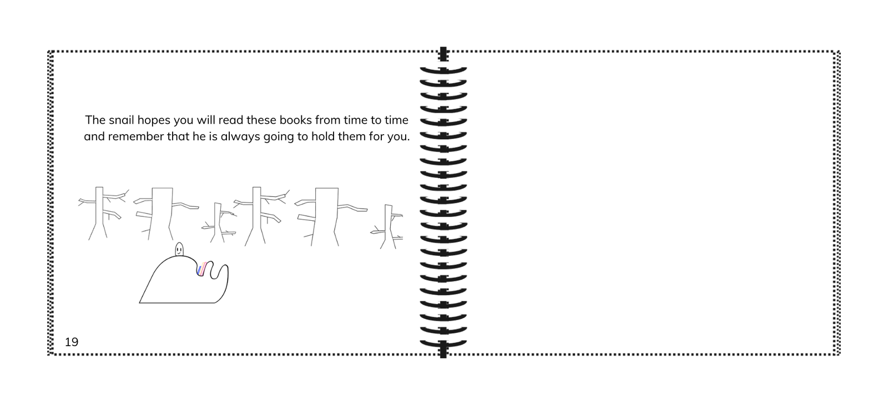
Turn the pages with the buttons, the arrow keys, or a swipe.